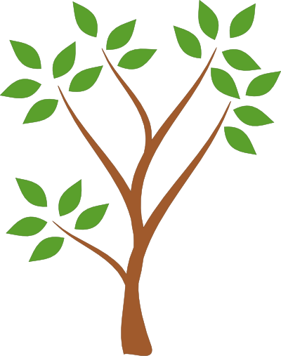

Растенията са царство организми, включващо познати форми, като дървета, храсти, треви, лиани,
папрати и мъхове, а според някои дефиниции и зелените водорасли.
Точният брой на видовете растения е трудно да се определи, но в наши дни се смята, че
съществуват 300 – 315 хиляди вида, от които основната част, 260 – 290 хиляди, са семенни растения.
Растителните видове биват застрашени по много начини: изсичането и прекомерната им употреба за
човешки нужди, което води до тяхото изчезване или застрашаване от изчезване. Също така голям вредител
и замърсител на растенията е некачествената почва и мръсната и замърсена вода, с която се полива.
Важно за доброто развитие на растението, неговият растеж и ползотворен живот(високо плодородие) е
влажността на почвата, определеното количество въглерод и хумус в неяя, но най-важното е нейната
чистота и тя да не бъде замърсявана или увредеана с определени субстанций.
